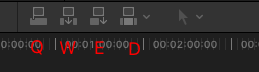
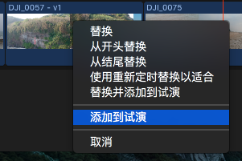
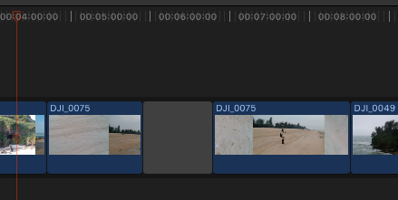
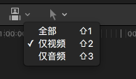

查看视频素材
视频素材部分的快捷键如下：
缩放快捷键： cmd++/-
完整显示快捷键： shift+z
播放/暂停快捷键： space
后退/暂停/前进快捷键： J/K/L
后退/前进慢动作：J+K/K+L
播放声音： s/shift+s
显示主线上所有视频： shift+z
设定入点/出点： i/o
播放入点到出点的视频片段：/
注：播放入点到出点时，建议打开循环播放。打开方法为：显示-播放-循环播放
快捷键：cmd+L
添加视频素材

无论插入到时间线的中间或结尾，都可以通过鼠标拖动的方式。
添加到结尾处快捷键：e
添加到光标处快捷键：w
注：如果设置了入点和出点，则只能将片段部分添加到时间线。
替换视频素材
克隆项目：cmd+d
注：克隆项目通常用于对项目的保护
将视频素材设为入点位置替换：d
将视频素材设为出点位置替换：shift+d
将光标定位到需要插入视频片段的位置，按下快捷键 d/shift+d。原视频长度不变，插入的视频出现在光标位置。

选择需要被替换视频片段，将需要替换的视频用鼠标拖动到被替换的视频上，会出现多个选项。其中，“使用重新定是替换以合适”是保持原有长度不变，对新视频进行加速/降速处理。
删除视频素材
在视频片段上设置入点和出点（i和o），直接按 DEL 键进行删除。后续视频向前补位。
注：此处可结合 JKL 进行精细化操作。
若想将删除视频处的缝隙保留，则按下 SHIFT+DEL 即可。

主线故事情节提取
插入非主线快捷键：Q
在主时间线上设置入点和出点，按下快捷键 Q，将视频片段插入到非主线上。非主线视频会截取为与入点和出点长度。播放时，会产生蒙太奇画面。
注：与主线故事连接，若移动主线视频，非主线视频会同时跟随移动。
提取主线故事情节快捷键：OPT+CMD+↑
选择主线故事视频，右键-从故事情节中提取。
选择多个视频插入非主线：
在多个视频片段中设置入点和出点，再按住 CMD 选择多个视频，按下快捷键 Q。
插入非主线快捷键（出点定位）：SHIFT+Q
使用 SHIFT+Q 可以将片段视频的结尾与当前光标位置对齐。
将复制的视频片段插入到主线故事中：CMD+V
将复制的视频片段插入到非主线故事中：OPT+V
移动素材与克隆素材
鼠标操作：将视频移动到需要的位置
滑动操作：,和。，shift+,和shift+可进行十倍速度移动
位置工具：移动时可能产生缝隙
复制并拖动：按住 opt 后拖动视频
音频管理
按住音频波形上下移动，可提高／降低声音大小。
批量操作： 选择所有视频，按下 CMD+4，在右上角的窗口内可对所有视频/音频进行批量操作
或右键－分离音频（快捷键：CMD+SHIFT+S）

仅插入视频快捷键：SHIFT+2
仅插入音频快捷键：SHIFT+3
扩展音频：右键－展开音频，将音频拖动到需要的视频下，再右键－折叠音频即可。